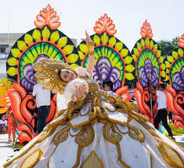

Overview
Festival tourism in Zamboanga Sibugay is a colorful window into the province's soul. These celebrations honor the bountiful harvests of the land and sea, the rich traditions of the Subanen people, and the historical milestones of the region.
From street dancing to the famous culinary showcases, these festivals transform the municipalities into vibrant hubs of music, art, and community spirit.
Major Annual Festivals
Sibug-Sibug Festival

Held every February in Ipil, the Sibug-Sibug Festival is the province's most grand celebration. It is famous for the "Longest Oyster Grill," highlighting the province's status as the Talaba Capital. The festival features street dancing where performers wear intricate costumes made from indigenous materials like shells, bark, and beads.
Pasalamat Festival (Kabasalan)

The Pasalamat Festival in Kabasalan is a deep-rooted thanksgiving celebration. It honors the cultural diversity of the town through ritual dances and exhibits that showcase the unity between the indigenous Subanen and the migrant settlers who have shaped the history of the municipality.
Araw ng Sibugay

Celebrating the founding anniversary of the province, Araw ng Sibugay is a week-long series of events held at the Provincial Capitol. It features the "Lupah Sug" trade fair, sports competitions, and cultural nights, drawing visitors from across the Zamboanga Peninsula to celebrate the province's progress and identity.